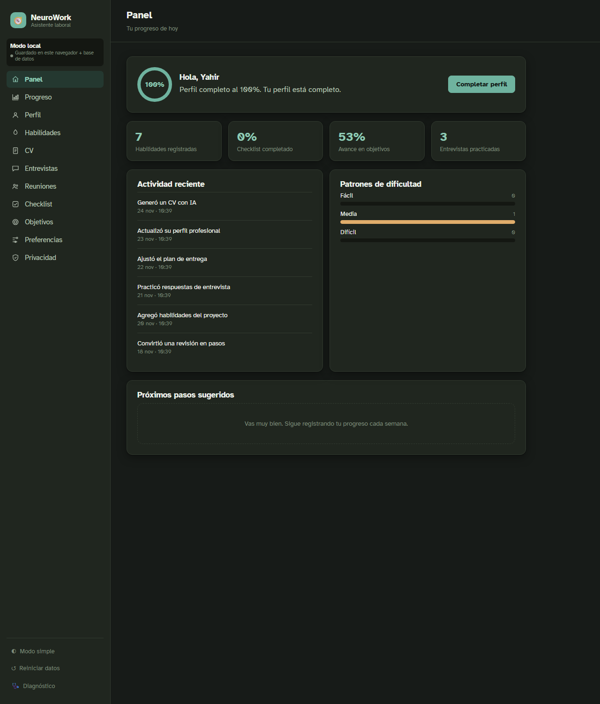
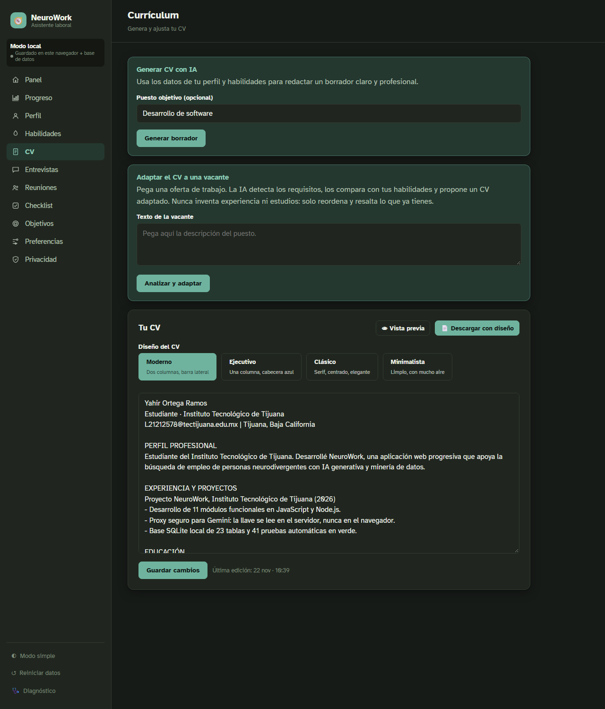
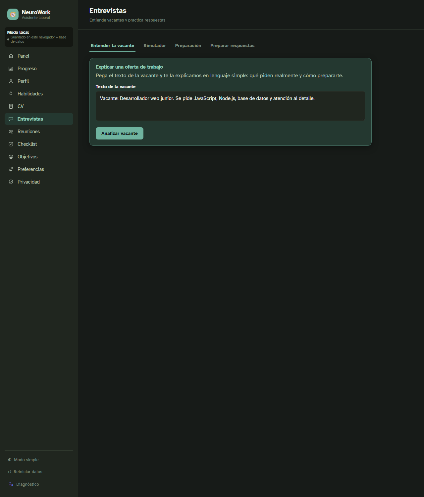
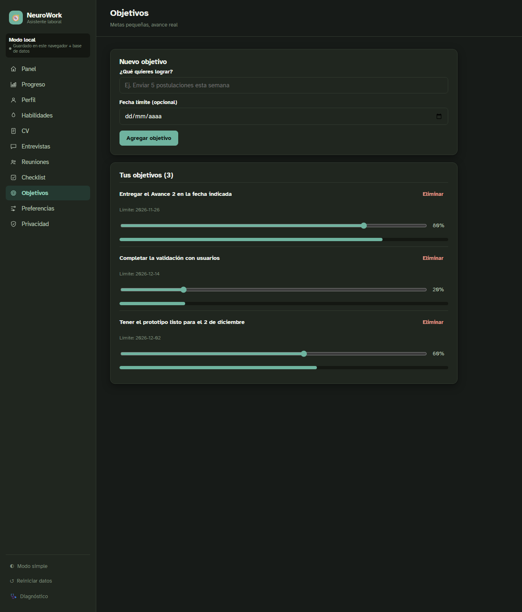
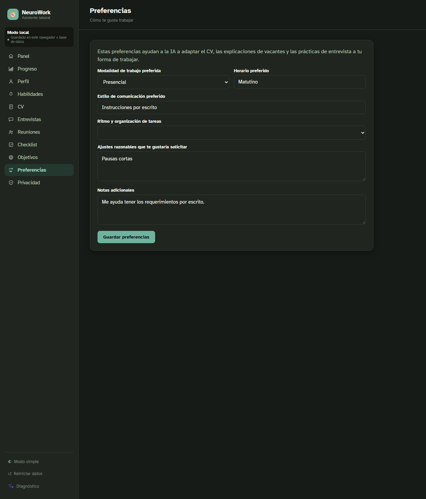
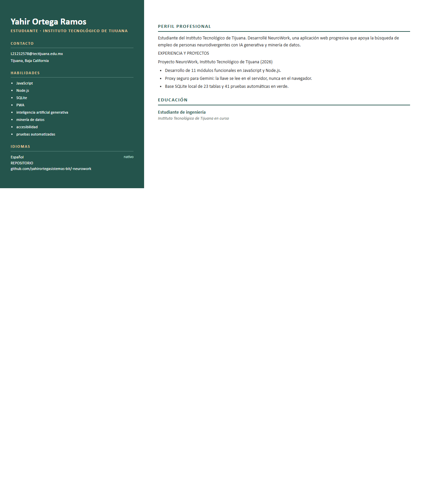
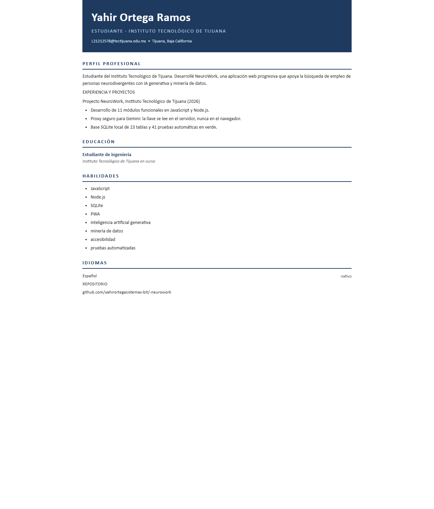
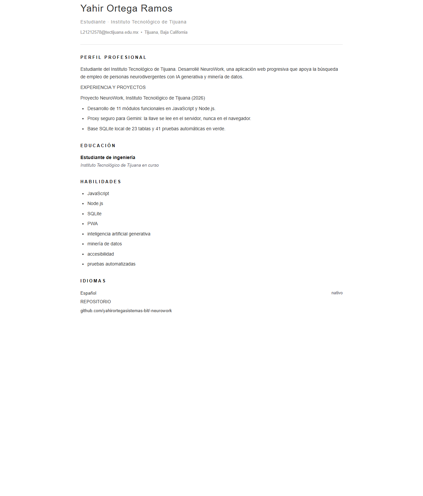

Fig. 2. Módulo de Progreso. Las gráficas salen de los datos guardados, no son cifras inventadas.
Equipo 5 (trabajo individual)
Instituto Tecnológico de Tijuana, Tijuana, Baja California, México
L21212578@tectijuana.edu.mx
Avance 2 · Repositorio: https://github.com/yahirortegasistemas-bit/-neurowork
Ya no estamos en el nivel de un diseño en papel. Los once módulos están metidos en la interfaz y se puede pasar de uno a otro sin problema. En el Panel se junta el resumen del día; Progreso muestra las gráficas que se calculan con los datos que la propia app guarda; Perfil y Habilidades son los que alimentan el CV. En Entrevistas hay cuatro pestañas (vacante, simulador, preparación y respuestas), Reuniones convierte unas instrucciones en pasos, y Checklist y Objetivos sirven para organizar la semana. Preferencias guarda modalidad y horario, y Privacidad explica qué información se queda guardada.
El módulo que más trabajo me costó fue el de CV. Le pedía a la IA un borrador a partir del
perfil, después lo adaptaba pegando el texto de una vacante y al final lo bajaba como
.doc. Me quedé con .doc y no con PDF porque así la persona puede
seguir editando el archivo; el PDF lo dejé anotado para la fase final. Las cuatro plantillas
son Moderno, Ejecutivo, Clásico y Minimalista. La vista previa la
puse porque sin ella uno se descarga el documento y hasta entonces se da cuenta de que las
fechas quedaron mal; ahora salen alineadas a la derecha.
No puse inicio de sesión. No se me pasó por alto: como aquí se guardan datos personales, tener cuentas obligaría a mandar esa información a un servidor, y yo quise que se quedara en la máquina de quien usa la app. Si más adelante el proyecto se vuelve multiusuario, habrá que revisar esa decisión.
Necesito Node.js 22 o superior y un navegador cualquiera reciente. Arranco con
node server/server.js y abro http://127.0.0.1:8787. La dirección no
es un detalle menor: al principio abrí el index.html directo y la IA me devolvía
Failed to fetch. También me pasó que el navegador seguía mostrando la versión
vieja hasta que le di Ctrl+Shift+R.
Para una demostración corta hago esto:
/api/db para ver que el respaldo sí se guardó.Lo que es local funciona aunque no haya internet, gracias al Service Worker. La IA es lo único que necesita red.
Me quedé con SQLite usando el módulo que ya trae Node 22, node:sqlite, para no
tener que instalar nada extra. El archivo se llama neurowork.db y vive en
server/data/; lo puse en el .gitignore para que no se me fuera a subir
junto con el código. El módulo todavía suelta un ExperimentalWarning al arrancar,
pero en esta versión funciona sin banderas especiales. La base ya guarda y recupera el estado
completo del prototipo. Lo que falta es la migración de datos viejos y, sobre todo, la
sincronización entre equipos.
workspace (raíz) ├─1:1─ profile ├─1:N─ experiences ├─1:N─ skills ├─1:1─ preferences ├─1:N─ education ├─1:N─ languages ├─1:1─ prep_plans ├─1:N─ certifications ├─1:N─ projects ├─1:1─ vacancy_analyses ├─1:N─ cv_documents ─N:1─ cv_templates ├─1:N─ checklist_items ├─1:N─ goals ├─1:N─ activity_log ├─1:N─ snapshots ├─1:N─ prepared_answers ├─1:N─ professional_links └─1:N─ meetings ─1:N─ meeting_steps └─1:N─ interview_sessions ─1:N─ interview_questions
Cada tabla tiene su clave primaria y las hijas apuntan a workspace(id) con
ON DELETE CASCADE, para que al borrar un espacio no queden datos sueltos. El DDL
está en server/db.js, en la constante SCHEMA_SQL.
La app llama a cuatro rutas nomás: PUT /api/state para guardar,
GET /api/state para recuperar al arrancar, DELETE /api/state cuando
se reinician los datos y GET /api/db para ver el motor y cuántas filas hay en cada
tabla. El guardado es doble: localStorage siempre y, si el servidor está
levantado, también SQLite. Si no hay servidor, la app sigue funcionando igual. Al arrancar
solo recupera del servidor cuando no hay nada en local, para no sobrescribir lo que la persona
ya venía usando.
La llave de Gemini se lee en el servidor desde server/.env. Al navegador no
llega; ese fue el motivo principal para meter un proxy en vez de llamar a la API directo desde
ai.js.
Las capturas las tomé con un perfil de ejemplo (María López) para no meter datos reales de nadie. Salieron de un navegador en modo sin interfaz y están numeradas del 1 al 15.














El video de demostración todavía no lo grabé; el guion ya está escrito. Para
repetir la verificación: npm test, node tools/db-info.js y
curl http://127.0.0.1:8787/api/db.
El cronograma del anteproyecto traía 20 actividades de agosto a diciembre. Le agregué una columna con lo que al día de hoy sí está entregado y quedó así:
| # | Actividad | Periodo | Planeado | Entregado | Evidencia |
|---|---|---|---|---|---|
| 1 | Investigación y análisis del problema | Ago | Completado | Completado | docs/01 |
| 2 | Investigación del estado del arte | Ago | Completado | Completado | Anteproyecto, docs/01 |
| 3 | Definición de requerimientos | Ago–Sep | Completado | Completado | docs/04 |
| 4 | Diseño de arquitectura del sistema | Sep | Completado | Completado | docs/03 |
| 5 | Diseño de base de datos | Sep | Completado | Completado (23 tablas) | docs/13 |
| 6 | Diseño de interfaces | Sep | Completado | Completado | docs/12, styles.css |
| 7 | Desarrollo del perfil profesional | Sep | Completado | Completado | app.js |
| 8 | Módulo de habilidades y CV | Sep–Oct | Completado | Completado (4 plantillas) | app.js, ai.js |
| 9 | Análisis de vacantes | Oct | Completado | Completado | Entrevistas |
| 10 | Simulador de entrevistas | Oct | Completado | Completado | app.js |
| 11 | Metas, actividades y checklist | Oct | Completado | Completado | app.js |
| 12 | Integración de inteligencia artificial | Oct | Completado | Completado | ai.js, server.js |
| 13 | Registro de datos | Oct | Completado | Completado (SQLite) | server/db.js |
| 14 | Análisis inicial mediante minería de datos | Nov | Pendiente | Completado (adelantado) | analytics.js |
| 15 | Pruebas funcionales | Nov | Pendiente | En progreso (41 pruebas) | tests/ |
| 16 | Pruebas de usabilidad | Nov | Pendiente | Pendiente | — |
| 17 | Corrección de errores | Nov | Pendiente | En progreso | §6.3 |
| 18 | Integración de la versión Beta | Nov | Pendiente | En progreso (PWA) | sw.js |
| 19 | Documentación del proyecto | Ago–Dic | En progreso | En progreso | docs/01–15 |
| 20 | Presentación y entrega | Dic | Pendiente | Pendiente (2 dic) | — |
El propio cronograma decía 75 %. Creo que ya va un poco más adelante porque la minería de datos y las pruebas funcionales, que estaban para noviembre, ya están hechas. Lo que sí sigue pendiente es sentar a personas a probar la app y la presentación final del 2 de diciembre.
Fui escribiendo las pruebas conforme iban saliendo errores. Al final quedaron 41 y las 41
pasan con npm test.
| Archivo | Casos | Qué revisa |
|---|---|---|
| tests/analytics.test.js | 16 | Minería de datos y gráficas |
| tests/cv-doc.test.js | 7 | Documentos de CV |
| tests/db.test.js | 7 | Ida y vuelta de la base y borrado en cascada |
| tests/api.test.js | 7 | API HTTP contra la base real |
| tests/server.test.js | 4 | Seguridad y utilidades del servidor |
Además de las pruebas automáticas les pasé node --check a los archivos de
app.js, ai.js, sw.js y server/. También abrí
/api/health y comprobé que los tres métodos de /api/state respondieran
como debían. La lista completa quedó en docs/09-pruebas.md.
Los problemas que más me hicieron perder tiempo fueron estos:
Failed to fetch de la IA, que era por abrir la app como archivo y no por
HTTP. Ya está corregido y además dejé un mensaje para que se entienda el error.neurowork-v3..doc se veían mal en Windows hasta que les puse el prefijo BOM para utf-8.Aquí no hay nada que reportar todavía. No hice pruebas con usuarios, así que no voy a poner opiniones que no recogí. La prueba con 2–3 personas neurodivergentes está en el plan de cierre.
En docs/ dejé los documentos que usé para armar el prototipo: arquitectura y flujo
(docs/03 y docs/13), módulos (docs/04), flujos de IA
(docs/05), minería de datos (docs/06), seguridad (docs/07)
y pruebas (docs/09). El manual de usuario está en docs/14 y el plan de
cierre en docs/15. El código y las capturas están en el repositorio que aparece al
inicio.
Esto es lo que tengo anotado para cerrar el proyecto. Los días son una estimación mía, no los medí:
| # | Actividad | Entregable | Tiempo |
|---|---|---|---|
| 1 | Prueba con 2–3 usuarios neurodivergentes | Informe de usabilidad | 4–5 días |
| 2 | Pasar el CV a PDF | Botón de descarga | 2–3 días |
| 3 | Migración y respaldo de la base | Script de migración | 2 días |
| 4 | Pruebas E2E en navegador | Checklist con evidencias | 2 días |
| 5 | Revisión de accesibilidad WCAG 2.2 AA | Informe | 2–3 días |
| 6 | Ajustes de interfaz según lo que salga | Cambios documentados | 3 días |
| 7 | Documentación final y memoria | Memoria y diagramas | 4–5 días |
| 8 | Presentación y demo | Diapositivas y video | 2 días |
Los recursos son el desarrollo individual, la asesoría del profesor y personas voluntarias para las pruebas. Calculo unas 4 semanas. La entrega final está marcada para el 2 de diciembre de 2026; para entonces entrego el prototipo completo, la base con su migración, las pruebas en verde, la memoria, el manual y las evidencias (repositorio, capturas y video).